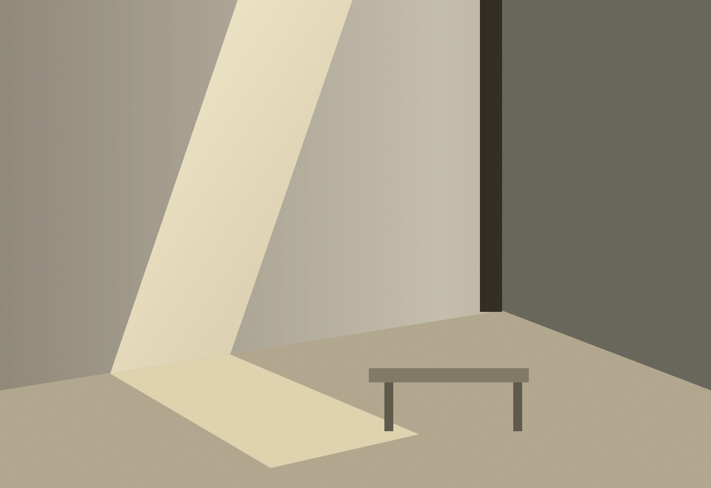

함께 머물되, 온전히 쉬는 곳.
많은 사람이 오가는 공동의 공간에서 진정한 안식과 교류는 어떻게 공존할 수 있을까요. 공간을 바라보는 질문에서 이야기를 시작합니다.
AURORA ID LAB · ARCHIVE & PRACTICE
A JOURNAL OF SPACE & SENSES
SEOUL, KOREA · VOL. 01
우리는 눈에 보이지 않는 감각의 질서를 설계합니다.
Form follows reason, senses build order.

머무는 이의 숨결, 빛의 궤적, 찰나의 침묵까지.
우리는 공간을 채우기 전에, 그 안에 놓일 삶을 생각합니다.
좋은 디자인은 보이지 않는 감각의 질서를 설계하는 일입니다.
Raemian One Bailey
Community Space
콘텐츠 구성안 · 프로젝트 자료 확인 전
많은 사람이 오가는 공동의 공간에서 진정한 안식과 교류는 어떻게 공존할 수 있을까요. 공간을 바라보는 질문에서 이야기를 시작합니다.
시선이 닿는 거리, 빛이 들어오는 방향, 발걸음을 받아내는 물성. 공간의 질서는 작은 감각 사이의 관계에서 드러납니다.
우리가 지향하는 공간은 자신을 과시하기보다 머무는 사람의 사유와 회복을 품습니다. 그 안에서 일상은 자신만의 속도를 되찾습니다.
위 글은 PRD 기반 편집 초안입니다. 실제 설계 과정·참여 범위·사진은 확인 후 수록합니다.
도시와 일상 사이에서 길어 올린
공간에 관한 세 가지 단상.
여백을 채우는 빛에 대하여.
보행자의 속도로 도시를 감각하는 법.
마감재의 가격이 아닌 감각의 비례에 관하여.
EDITORIAL PREVIEW · 제목과 글은 검토용 초안입니다.
프로젝트의 이유와 목적을 들려주시면,
깊이 있는 대화로 시작하겠습니다.
주거 · 웰니스 · 상업 공간
브랜딩 및 경험 설계 자문
공간 철학과 주거 문화
강연 및 기관 자문
공간 에세이 · 칼럼 기고
텍스트 기반 큐레이션
메일로 대화 시작하기